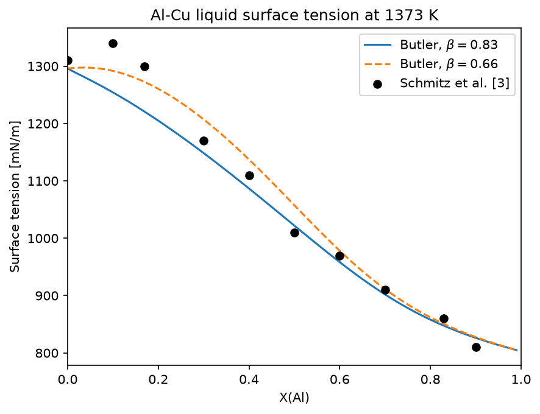
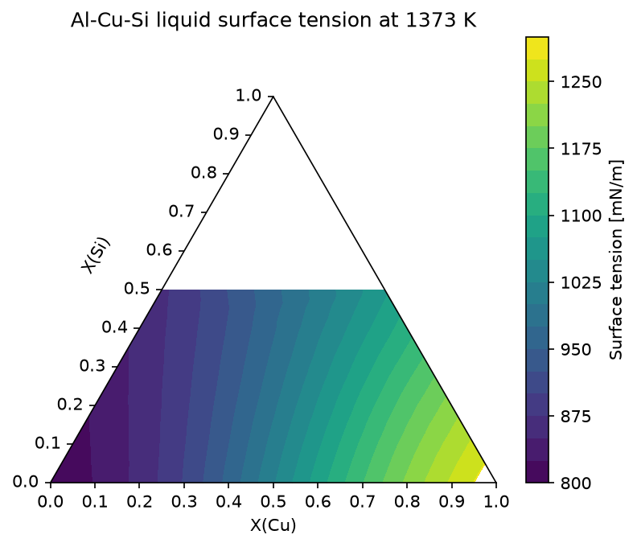

Surface Tension of Liquid Alloys: Butler Equation¶
This example shows how to use PyCalphad’s ComputableProperty framework to build custom properties. We use the Butler equation as a motivating example, where the ComputableProperty class we write can be copy-pasted or imported as a helper function. The Butler equation predicts the surface tension of a liquid alloy from the surface tensions of the pure liquids and the excess Gibbs energy of the bulk liquid. Treating the surface as a monolayer in equilibrium with the bulk gives, for each
component \(i\) of an \(n\)-component liquid,
where \(x^B\) and \(x^S\) are the bulk and surface compositions, \(G_i^E\) is the partial excess Gibbs energy of \(i\) in the bulk liquid, \(\sigma_i\) is the surface tension of pure liquid \(i\) and \(A_i = L N_A^{1/3} V_i^{2/3}\) is its molar surface area. The partial excess Gibbs energy of the surface is taken as \(\beta = 0.83\) times that of the bulk liquid evaluated at the surface composition \(x^S\), and \(L = 1.091\) for liquid metals [1]. These \(n\) equations and \(\sum_i x_i^S = 1\) are solved for \(\sigma\) and \(x^S\). In this example, we will use the Butler equation to compute surface tensions for Al-Cu, Al-Cu-Si, and an TiAl-2Cr-2Nb alloy. Pure element thermophysical properties will be taken from the literature and \(G_i^E\) will be computed from the COST 507 database [2].
[1]:
import warnings
from importlib.resources import files
import matplotlib.pyplot as plt
import numpy as np
from scipy.constants import N_A
from scipy.optimize import root
from pycalphad import Database, Workspace, variables as v
import pycalphad.tests.databases
R = float(v.R) # the gas constant used by the database models
# COST 507 emits benign warnings at load about unused type-definition characters
warnings.filterwarnings('ignore', category=UserWarning, module='pycalphad.io.tdb')
Pure element data¶
The pure liquids follow \(\sigma_i(T) = \sigma_{m,i} + \frac{d\sigma_i}{dT}(T - T_{m,i})\) and \(V_i(T) = V_{m,i}\left[1 + \alpha_i (T - T_{m,i})\right]\). Surface tensions are from [3] for Al and Cu, [4] for Si and [5] for Cr, Nb and Ti. Molar volumes and expansion coefficients are from [6].
[2]:
# sigma_m [N/m], dsigma/dT [N/m/K], T_m [K], V_m [m^3/mol], alpha [1/K]
PURE = {
'AL': (0.871, -1.55e-4, 933, 11.3e-6, 1.5e-4),
'CR': (1.780, -5.44e-4, 2148, 8.27e-6, 1.1e-4),
'CU': (1.300, -2.64e-4, 1358, 7.94e-6, 1.0e-4),
'NB': (1.937, -1.99e-4, 2742, 11.9e-6, 0.51e-4),
'SI': (0.850, -2.50e-4, 1683, 11.1e-6, 1.4e-4),
'TI': (1.560, -1.65e-4, 1941, 11.6e-6, 0.56e-4),
}
Butler surface tension as a computable property¶
We implement a self-contained ButlerSurfaceTension class that follows PyCalphad’s ComputableProperty protocol and solves the Butler equations. It returns NaN unless the liquid is the only stable phase. The protocol is defined at pycalphad.property_framework.types.ComputableProperty, which requires the compute_property method and shape property to be defined to follow the protocol and work with Workspace.
[3]:
class ButlerSurfaceTension:
implementation_units = 'N/m' # internal units of calculations
display_units = 'mN/m' # default units returned by Workspace
display_name = 'Surface tension'
shape = ()
def __init__(self, pure_data, phase='LIQUID', beta=0.83, L=1.091):
self.pure_data = pure_data
self.phase = phase
self.beta = beta
self.L = L
def compute_property(self, compsets, cur_conds, chemical_potentials):
if len(compsets) != 1 or compsets[0].phase_record.phase_name != self.phase:
return np.nan
# assumes a single sublattice with ideal configurational entropy, so site fractions are mole fractions
phase_record = compsets[0].phase_record
state_variables = compsets[0].dof[:phase_record.num_statevars]
T = state_variables[phase_record.state_variables.index(v.T)]
x_bulk = np.array(compsets[0].X)
sigma_m, dsigma_dT, T_m, V_m, alpha = np.array([self.pure_data[el] for el in phase_record.nonvacant_elements]).T
sigma_pure = sigma_m + dsigma_dT * (T - T_m)
A = self.L * N_A**(1/3) * (V_m * (1 + alpha * (T - T_m)))**(2/3)
pure_dof = np.hstack([np.tile(state_variables, (x_bulk.size, 1)), np.eye(x_bulk.size)]) # a row per pure liquid
G_pure = np.zeros(x_bulk.size)
phase_record.prop_2d(G_pure, pure_dof, b'GM')
def G_excess(x): # mu_i - G_pure_i - RT ln(x_i), with mu_i from the tangent to the molar Gibbs energy
dof = np.append(state_variables, x)
GM, grad = np.zeros(1), np.zeros(dof.size)
phase_record.prop(GM, dof, b'GM')
phase_record.prop_grad(grad, dof, b'GM')
dGM_dx = grad[phase_record.num_statevars:]
return GM + dGM_dx - x @ dGM_dx - G_pure - R * T * np.log(x)
G_bulk = G_excess(x_bulk)
def residuals(z): # z = [ln(x_surface), sigma]
ln_x_surface, sigma = z[:-1], z[-1]
G_surface = self.beta * G_excess(np.exp(ln_x_surface))
butler = ln_x_surface - np.log(x_bulk) + (G_surface - G_bulk - A * (sigma - sigma_pure)) / (R * T)
return np.append(butler, np.exp(ln_x_surface).sum() - 1)
sol = root(residuals, np.append(np.log(x_bulk), x_bulk @ sigma_pure))
return sol.x[-1] if sol.success else np.nan
sigma = ButlerSurfaceTension(PURE)
Binary: Al-Cu¶
At 1373 K, Al-Cu is liquid at all compositions. Schmitz et al. [3] measured its surface tension by electromagnetic levitation (Table 2) and used the same COST 507 liquid in a Butler model with \(\beta = 0.66\), which is also shown.
[4]:
dbf = Database(files(pycalphad.tests.databases) / 'COST507.tdb')
exp_x_al = [0.0, 0.10, 0.17, 0.30, 0.40, 0.50, 0.60, 0.70, 0.83, 0.90]
exp_sigma = [1310, 1340, 1300, 1170, 1110, 1010, 970, 910, 860, 810] # mN/m
conditions = {v.X('AL'): (0, 1, 0.01), v.T: 1373, v.P: 101325, v.N: 1}
wks = Workspace(dbf, ['AL', 'CU', 'VA'], list(dbf.phases.keys()), conditions)
x_al, sigma_083, sigma_066 = wks.get(v.X('AL'), sigma, ButlerSurfaceTension(PURE, beta=0.66))
fig, ax = plt.subplots(dpi=150)
ax.plot(x_al, sigma_083, label=r'Butler, $\beta = 0.83$')
ax.plot(x_al, sigma_066, '--', label=r'Butler, $\beta = 0.66$')
ax.scatter(exp_x_al, exp_sigma, color='k', zorder=3, label='Schmitz et al. [3]')
ax.set_title('Al-Cu liquid surface tension at 1373 K')
ax.set_xlabel('X(Al)')
ax.set_ylabel(f'{sigma.display_name} [{sigma.display_units}]')
ax.set_xlim(0, 1)
_ = ax.legend()

With \(\beta = 0.83\), the calculation is within about 2% of the measurements for X(Al) \(\geq\) 0.3 but up to 6% low on the Cu-rich side, where \(\beta = 0.66\) is closer (within 4%) at the expense of intermediate compositions. \(\beta = 0.83\) is used below.
Ternary: Al-Cu-Si¶
The surface tension at 1373 K is plotted where the liquid is the only stable phase.
[5]:
conditions = {v.X('CU'): np.linspace(0, 1, 21), v.X('SI'): np.linspace(0, 1, 21), v.T: 1373, v.P: 101325, v.N: 1}
wks = Workspace(dbf, ['AL', 'CU', 'SI', 'VA'], list(dbf.phases.keys()), conditions)
x_cu, x_si, sigma_values = (arr.ravel() for arr in wks.get(v.X('CU'), v.X('SI'), sigma))
liquid = ~np.isnan(sigma_values)
fig = plt.figure(dpi=150)
ax = fig.add_subplot(projection='triangular')
contours = ax.tricontourf(x_cu[liquid], x_si[liquid], sigma_values[liquid], levels=20)
ax.set_title('Al-Cu-Si liquid surface tension at 1373 K')
ax.set_xlabel('X(Cu)')
ax.set_ylabel('X(Si)')
ax.yaxis.label.set_rotation(60)
ax.yaxis.set_label_coords(x=0.12, y=0.5)
_ = fig.colorbar(contours, ax=ax, label=f'{sigma.display_name} [{sigma.display_units}]')

Multicomponent: Ti-48Al-2Cr-2Nb¶
The surface tension of the \(\gamma\)-TiAl alloy Ti-48Al-2Cr-2Nb (atomic %) has been measured by the oscillating drop method in electromagnetic levitation on parabolic flights and on the International Space Station (ISS) [5, 7]. The calculation is compared with the measurements at 1973 K, about 200 K above the liquidus.
[6]:
# mN/m at 1973 K, compiled in [5]
measured = {'parabolic flight': 1124, 'ISS': 1189, 'ISS [7]': 1235}
conditions = {v.X('AL'): 0.48, v.X('CR'): 0.02, v.X('NB'): 0.02, v.T: 1973, v.P: 101325, v.N: 1}
wks = Workspace(dbf, ['AL', 'CR', 'NB', 'TI', 'VA'], list(dbf.phases.keys()), conditions)
print(f"{sigma.display_name}: {wks.get(sigma):.0f} {sigma.display_units}")
for source, value in measured.items():
print(f"Measured ({source}): {value} {sigma.display_units}")
Surface tension: 1038 mN/m
Measured (parabolic flight): 1124 mN/m
Measured (ISS): 1189 mN/m
Measured (ISS [7]): 1235 mN/m
The calculated surface tension is 7-16% below the measurements. Novakovic et al. [5] obtained about 1000 mN/m from compound formation and Butler models of the Ti-Al-Cr and Ti-Al-Nb subsystems and regard that as a lower bound for this alloy.
References¶
Iida, R.I.L. Guthrie, The Physical Properties of Liquid Metals, Clarendon Press, Oxford (1988).